Gold in a bathroom walks a fine line between glamorous and gaudy.
Done with restraint, it reads as genuinely elevated.
Overdone, it tips into something closer to a hotel lobby than an actual home.
This covers where gold actually earns its place in a bathroom, and exactly how much is too much.

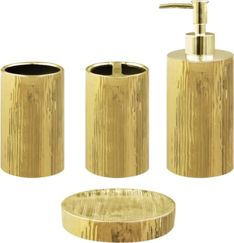
Gold Bathroom Accessories Set, 4 Piece Ceramic, Toothbrush Holder and Soap Dispenser
Shop on AmazonStart With the Budget-Friendly Options
Gold spray paint on existing hardware, a few new accessories, or a single statement mirror all deliver real impact without a full fixture replacement.
It is a genuinely low-risk way to test whether the look actually works in a specific bathroom before committing to anything permanent.
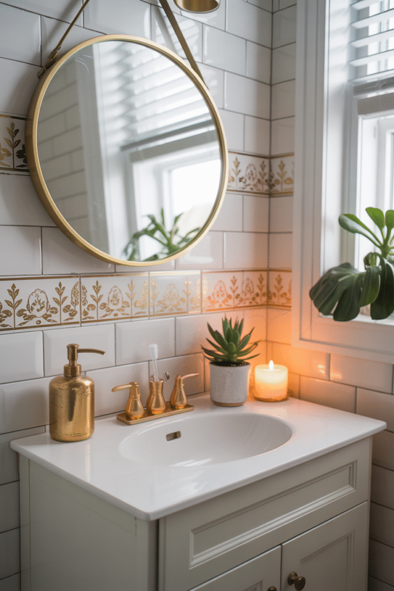
Think About What Gold Pairs With
Gold against white or cream reads as classic and timeless.
Against black or deep green, it reads as considerably more dramatic and moody.
A soft blush or dusty pink alongside gold brings a softer, more romantic version of the same glam look.
Whichever pairing gets chosen, keeping the rest of the palette simple is what actually lets the gold stand out.
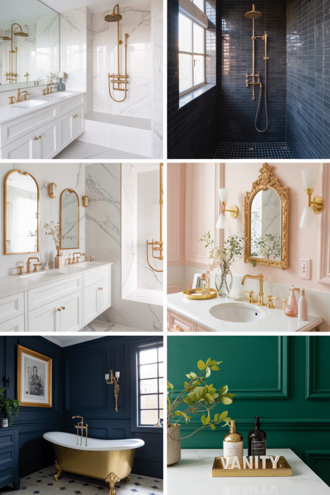

Know When to Stop
Gold on every single surface, fixtures, mirror, hardware, accessories, tips a room from glamorous into overwhelming surprisingly fast.
Picking two or three places for gold to actually show up, and letting the rest of the room stay quieter, keeps the whole look feeling intentional rather than excessive.
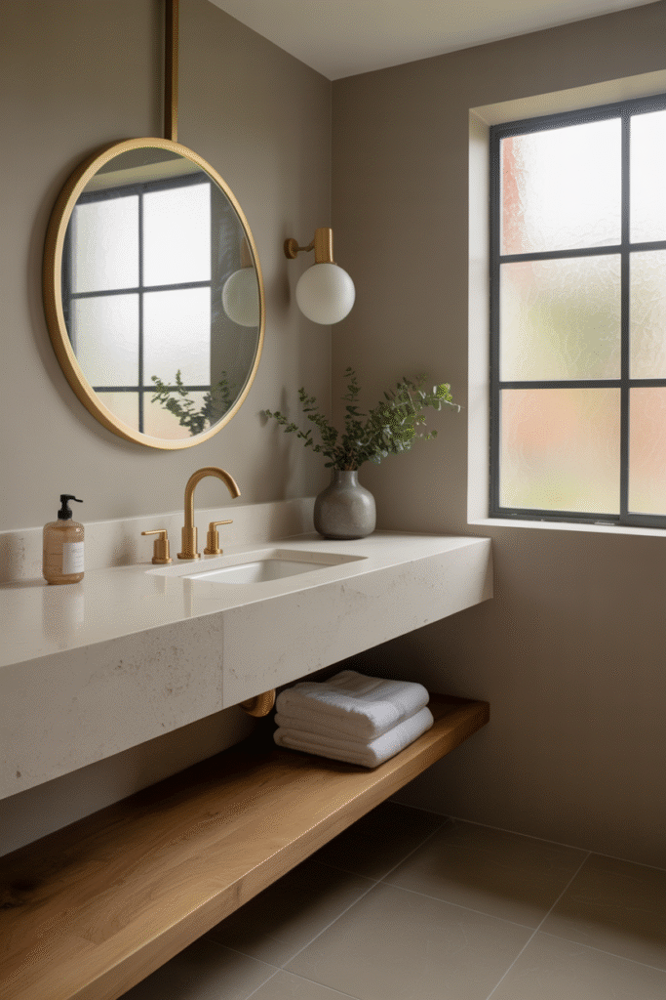
Go Bigger With Tile or Wallpaper
A gold-veined marble tile or a metallic wallpaper brings the color in at a much larger scale than any single fixture ever could on its own.
This is the highest-commitment choice on this list, and it is best reserved for someone already confident in the look rather than still testing it out.
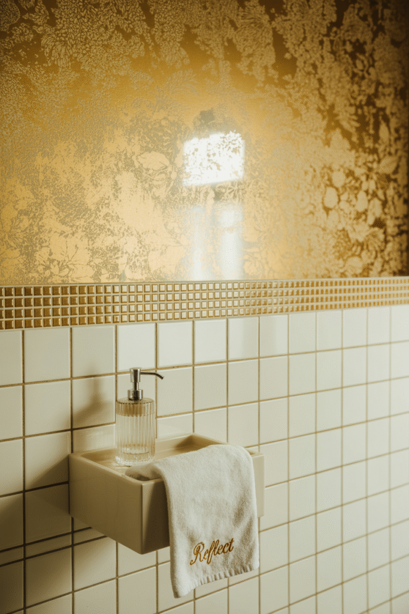
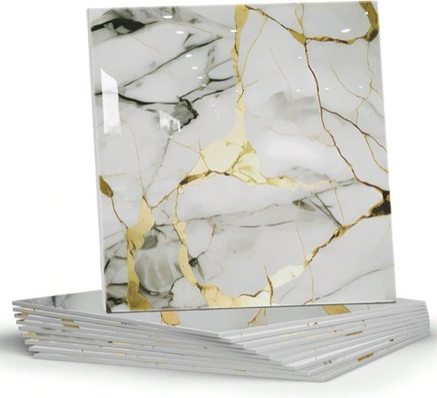
Marble Peel and Stick Backsplash Tile, 12 x 12 Inch, 10 Sheets, Waterproof PVC
Shop on AmazonVEELIKE Luxury Gold Peel and Stick Metallic Wallpaper, 15.7 x 118 Inch
Shop on AmazonBring It In Through Accessories
A soap dispenser, a tray, drawer pulls, or a wastebasket in gold all add the color at a far lower cost and commitment than a fixture or mirror would.
This is the easiest layer to adjust too, if the overall amount of gold in the room ever starts creeping toward too much.
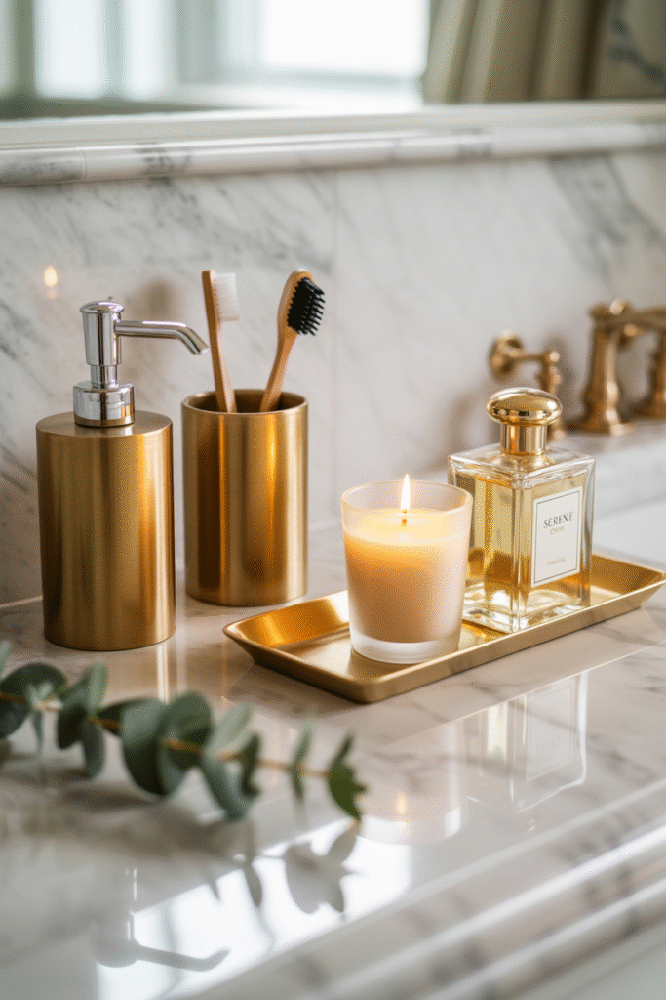
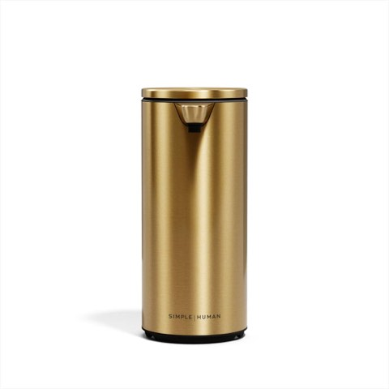
simplehuman Liquid Sensor Pump, 9 Oz Automatic Touchless Soap Dispenser
Shop on Amazon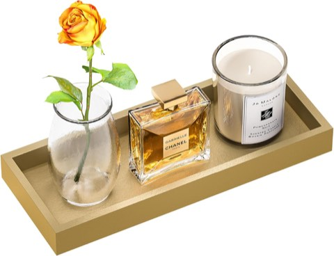
ZHWS Gold Bathroom Vanity Tray for Soap Dispenser, Perfume, Jewelry and Candle
Shop on AmazonChoose Lighting That Glows
A gold sconce or pendant does not just add color, it genuinely changes how the light itself reads, giving off a warmer, more flattering glow than a cooler fixture would.
This pairs naturally with a mirror too, especially when placed directly beside or above it to work as real vanity lighting.
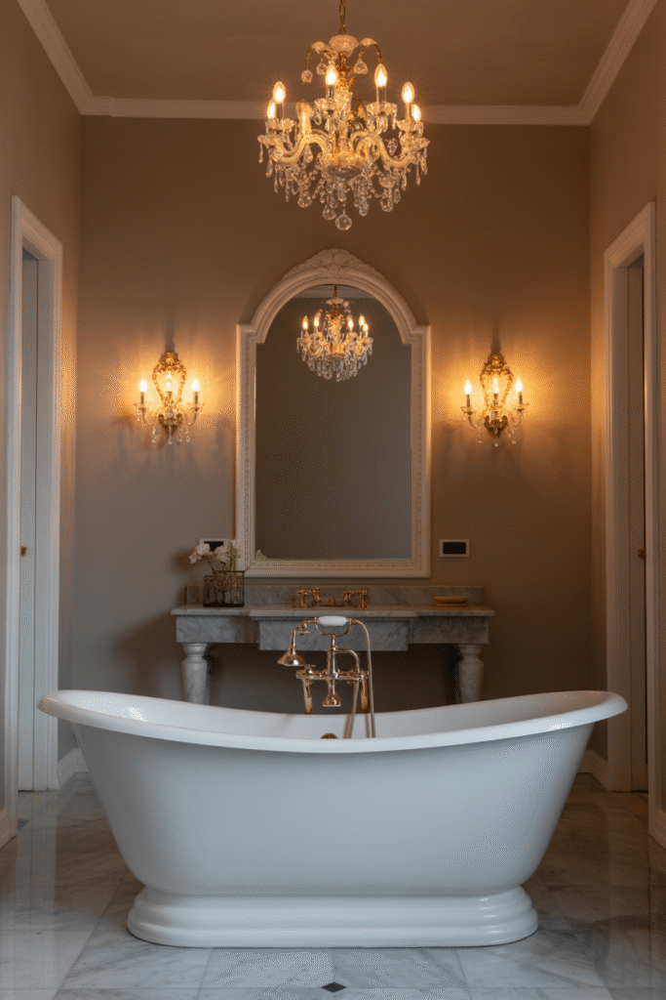
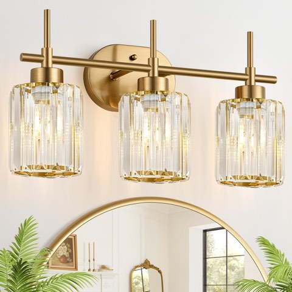
Modern Crystal Bathroom Vanity Light, 3-Light, Brushed Gold, Clear Shades
Shop on Amazon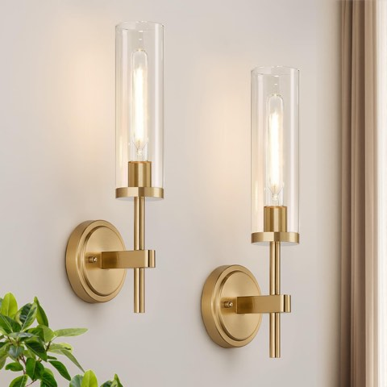
MOKATNG Hardwired Wall Sconces, Set of 2, Brushed Gold Bathroom Sconces
Shop on AmazonLet a Mirror Be the Centerpiece
A gold-framed mirror, especially in an arched or sculptural shape, becomes the room's natural focal point without needing anything else nearby to compete with it.
It is one of the easiest, lowest-commitment ways to try the whole look, a single swap rather than anything close to a full renovation.
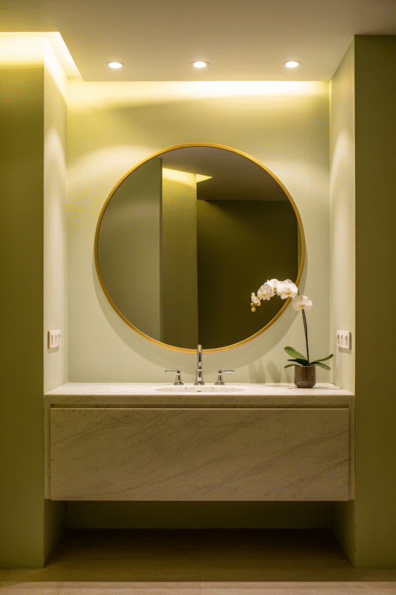
Start With the Fixtures
A gold faucet, showerhead, or towel bar is the highest-impact, most durable way to bring the color in, since these are the pieces that actually get touched and seen every single day.
A brushed or antiqued gold finish tends to hide water spots better than a polished one, which matters more in this room than in almost any other in the house.
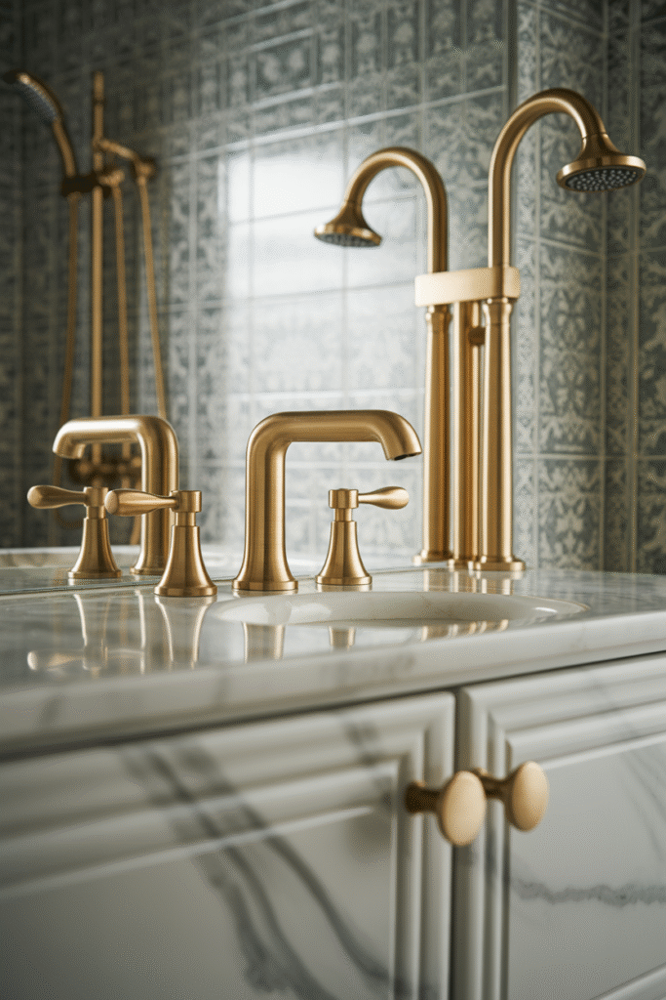
REDKISS 6 Piece Pink Towel Set, 2 XL Bath, 2 Hand Towels, 2 Washcloths
Shop on Amazon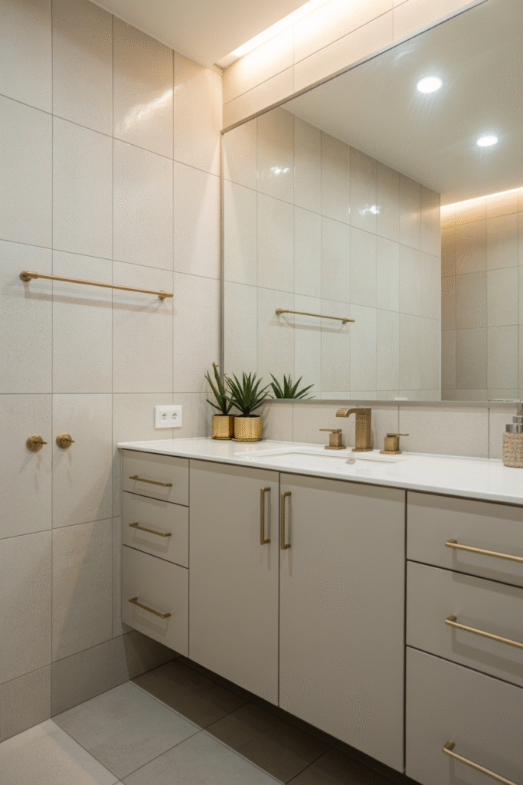
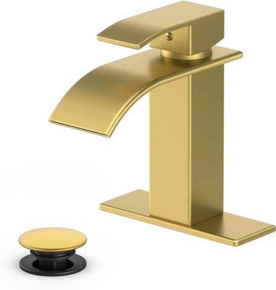
Ryuwanku Waterfall Bathroom Faucet, Brushed Gold Stainless Steel, 1-Handle
Shop on Amazon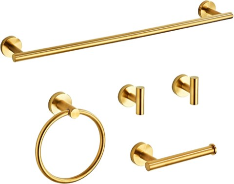
Brushed Gold Bathroom Hardware Set, 5 Piece, SUS304 Stainless Steel with Towel Racks
Shop on AmazonWhy Gold Works So Well in This Room
A bathroom is full of hard, cool surfaces, tile, porcelain, glass, which makes a warm metal accent do far more visual work here than it would in almost any other room in the house.
Gold in particular catches light in a way that flatters a bathroom's typically bright, reflective lighting better than a cooler metal tone ever does.
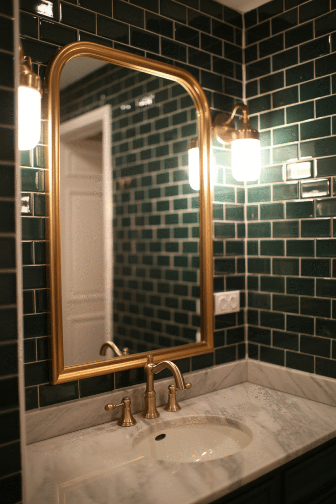
Gold Bathroom Accessories Set, 4 Piece Ceramic, Toothbrush Holder and Soap Dispenser
Shop on AmazonBrushed Gold Bathroom Faucet, 3 Hole, 8 Inch Widespread, Waterfall
Shop on Amazon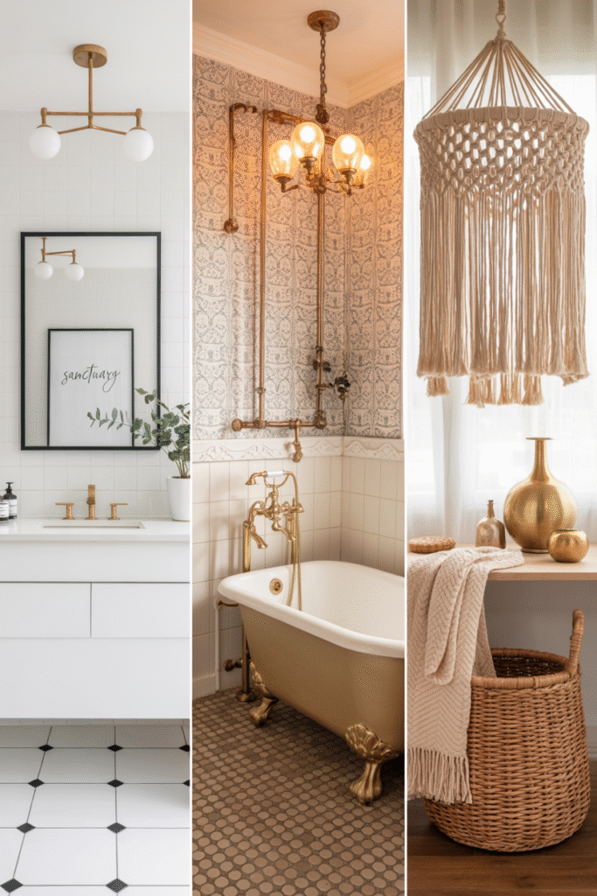
Go for Gold
Gold earns its place in a bathroom when it is deliberate, a few considered pieces rather than every single surface at once.
Start with fixtures or a mirror, since both deliver the most visible impact, then layer in accessories and color pairings as the whole look comes together.
Handled with restraint, it is one of the more genuinely elevating choices a bathroom can make, and one of the easier ones to get wrong by simply adding too much.